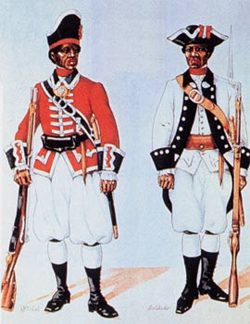
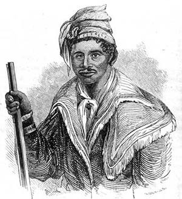
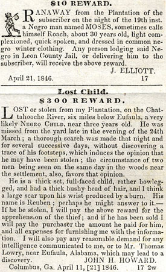

|
Slaves were introduced into Florida when the area was claimed by Spain as part
of her vast New World colonial empire. As early as 1580, colonial officials had
requested permission to import African slaves to work in the St. Augustine area.
Several years later a small group was brought in to help reinforce the fort
there and to clear the woods for planting. The number of black slaves in Spanish
Florida did not increase in any significant way, however, because the Spanish
Crown prohibited the use of slave labor in Florida on a scale comparable to that
of the labor forces used to develop the sugar plantations of the Spanish West
Indies. Thus, a labor shortage prevailed in Florida during the period of Spanish
control, between 1565 and 1763. This greatly hampered the development of crop
production, and the colony was never self-sustaining, having to rely upon
staples imported from Havana, Cuba, and abroad.
|

As early as 1689, African slaves fled from British America to
Spanish Florida seeking freedom. After 1693 they received liberty in exchange
for defending the Spanish settlers at St. Augustine. The Spanish organized the
blacks into a militia, and in 1738 they founded a settlement at Fort Mose
outside St. Augustine, the first legally sanctioned free black town in North
America.
|
With the cession of Florida to Great Britain in 1763, at the close of the
Seven Years' War, the Spanish population withdrew. Even before this war ended,
wealthy planters and merchants of South Carolina had become interested in east
Florida along the St. Johns River for cultivating rice and indigo. Some of them
moved to the area, imported black slaves, and developed large plantations with
the use of this labor force. During the American Revolution, many Tories from
Georgia and South Carolina fled to Florida, taking their slaves with them.
Approximately 5,000 whites and 8,000 slaves had fled to Florida by the close of
the Revolution to escape the penalties of their pro-British sympathies.
Unlike the Spanish period, Florida under English colonization was relatively
self-sufficient. The British government offered bounties for indigo and naval
stores, which soon became the principal staples of the region. The progress of
agriculture and slavery in British Florida, however, proved temporary. At the
close of the Revolutionary war in 1783, Florida receded to Spain, and most of
the British inhabitants, with their slaves, left the country. Under this period
of Spanish control, from 1783 to 1821, Florida relapsed into the economic
stalemate of her earlier days under Spanish rule. Such were the conditions when
Florida was acquired from Spain by the United States in 1821 to become a
frontier development for slaveholding cotton planters from the older states of
the South.
It was already known that the lands called middle Florida, lying just below
the thirty-first parallel of latitude between the Apalachicola and Suwannee
rivers, and the lands bordering those rivers were extremely fertile and
desirable for growing cotton. As early as 1773, the botanist William Bartram had
described the country as exceptionally fertile for the cultivation of cotton and
other agricultural products. The area is well defined geographically, as its
soil type differs from that of the rest of the state. In this relatively small
and isolated region, between 1821 and 1860, a cotton economy emerged that
compared favorably in output with that of the Georgia piedmont or the Black Belt
of Alabama and Mississippi.
The rapid expansion and increase of cotton culture in Florida would not have
happened without slavery. Abundant cheap labor made possible the process of
winning new lands from a wilderness. The plantation was a frontier institution
and its development in Florida exemplified the manner in which settlers pushed
into virgin lands to create new slaveholding societies based upon an enforced
labor system. The Cotton Belt in Florida, when it became fully developed,
extended from Jackson County, west of the Apalachicola River, into Alachua and
Marion counties, southeast of the Suwannee River. The heaviest concentrations of
plantations, slave populations, and cotton production were located in Jackson,
Gadsden, Leon, Jefferson, and Madison counties. It was only after 1840 that
settlers with their slaves spilled over into Alachua and Marion counties to
develop new cotton lands. In south Florida, sugar plantations, developed as
early as the 1820s, had been completely destroyed during the Seminole Wars of
the 1830s. After 1840, a new migration to south Florida along the Manatee River
resulted in the rise of a few large sugar plantations, but sugar in Florida
compared in no way to cotton as a money crop, and after 1850 its importance
declined.
Much of the slave trade in Florida centered in Tallahassee, since this
capital city was in the heart of the Cotton Belt. "Negro-traders" purchased
slaves there "from the block" at public outcry, then proceeded with them to
various areas for resale. A large part of the supply for Florida planters was
brought in by these traders. They came to St. Marks by ship, then went on to
Tallahassee to dispose of their cargoes. Slaves were kept in the public jail or
in "slave pens" until time of sale. The latter were buildings especially
designed with cells. The sale of slaves was widely advertised in advance, and as
they were presented at auction, bidding was often spirited.
The mania for buying slaves that seized Florida planters is evidenced by the
fact that the black slave population increased from 7,587 in 1830 to 26,526 in
1840, a growth rate far in excess of the normal increase. This rapid growth
continued during the 1840s, though it was not as pronounced. By 1850, there were
39,310 slaves in the state, and 61,750 by 1860, nearly half of the state's total
population of 140,500. The slave population remained concentrated in the Cotton
Belt.
Various classifications determined individual prices for slaves. For
instance, blacksmiths, carpenters, seamstresses, prime field hands, brick
masons, and house servants commanded higher prices than other slaves. Sex, age,
temperament, physical condition, skill, and experience were also determining
factors. Blacks recently imported from Africa were considered less valuable than
"country" blacks from an older state like Virginia, because the Africans were
not yet acclimated or acculturated.
Field hands between eighteen and thirty years of age brought more than older
slaves, and male hands brought higher prices than female hands. Children were
often priced according to height and weight, and infants were valued by the
pound. Attractive females and skilled workers sometimes sold for triple the
value, and in some instances the buyer would pay more for a group of slaves upon
agreement that the old and infirm would be excluded.
At the time of William Bellamy's death in 1846, for example, most of the 108
slaves on his "home" plantation in Jefferson County were appraised and
classified as nineteen family groups, with the value of each family given.
"Moses, Molly, Parris, in a family" were valued at $1,000, while another family,
consisting of eleven blacks, some of whom were small children, was valued at
$2,750. "Hannah," who was old, was "of no value." In 1851, Reddin W. Parramore's
slaves were valued separately: "Wash, a man about 30 yrs. $600; Cherry, a young
woman 16 yrs. $600; Amanda, a woman 19, unhealthy, $400." Mary, who was thirty
years old and blind, had no value.
|

Often, runaway slaves in Florida would receive
aid and support from Native Americans--some, so much so that they
were known as "Black Seminoles." Pictured here is a Black Seminole
named Abraham.
|
Closely allied with slave trading was the practice common throughout the
plantation belt in Florida of owners hiring out their slaves. In certain
instances, when planters died and left a wife and minor children, they directed
in their wills that their slaves be hired out, the proceeds to be used for
education and maintenance of a child or for partial support of their families.
In other instances, administrators or guardians, legally responsible for
estates, hired out slaves belonging to the estate as a form of investment and
income for the heirs. Slaves were also hired from owners to do construction work
on roads or railways, and skilled slaves were sometimes hired individually for a
certain period during the year to work as carpenters or blacksmiths.
The usual period of hire was for a year, and the person hiring was expected
to furnish the slave with at least two suits of clothing, a hat, shoes, and a
blanket. The rate of hire varied with the type of labor, the average annual rate
of hire in Florida prior to 1850 was less than $100. During the 1850s the
average rate increased, and yearly slave hire ranged from $100 to $400.
Many persons in Florida (also in the other slave states) were opposed to the
system of hiring out because it encouraged a certain amount of freedom for the
cave, especially as the system developed in the cities, where slaves were
allowed to hire themselves out for wages, paying to the owner a stipulated
amount and keeping the rest for themselves. Though the amount retained was very
small, it gave the slave some independence. Under this system, the slave located
his own job, agreed upon the amount of the wages, and gave to the owner a
certain amount monthly or weekly. Opposition to this type of hire became
especially sharp after 1850. Several white residents of Quincy, Tallahassee, and
St. Augustine, for example, sent memorials to the Florida legislature and to the
governors petitioning for laws to prevent hiring and to restrict blacks in other
ways. The petitioners complained that it had "become a common practice for
owners, guardians, and agents to allow slaves to hire their own time." More than
this, it was "getting common for slaves to own horses and buggies, and to go to
and fro of nights and of Sundays as they may desire... Allowing some slaves
such latitude is calculated to create dissatisfaction among others." White
Floridians' fears that the hiring system in the cities was eroding the very
foundation of slavery were well founded. City slaves were free of the
restrictions and police regulations put upon plantation slaves, and their time
was their own when they were not working.
Slavery was first of all a labor system, and the slaveholders' primary
concern was getting work out of their slaves. As the work was basically
agricultural, the vast majority of slaves toiled on cotton plantations. Many
plantations were small units using only a few slaves, where slaves and owners
worked together in the fields at various tasks, but when the number of slaves
owned included thirty at more field hands, an overseer was usually employed.
(There has been a tendency to identify slaveholders as planters when they owned
this number or more working hands and employed an overseer to direct the work.
One overseer directing fifty or more slaves was thought to be a good balance. If
the number reached one hundred or more, the planter might engage another
overseer and divide the force to operate more than one plantation.
The federal census returns for 1860 list 468 overseers directing the work of
slaves on Florida plantations. It is fairly certain that most of the plantations
of average size (1,500-2,500 acres) using thirty or more field laborers, and
certainly the larger ones, were managed by overseers. Nearly half of the slave
population of the South was owned by slaveholders operating plantations of these
dimensions. Many planters believed that a force of less than thirty slaves could
not be worked profitably.
The large plantations were elaborate organizations, resembling somewhat the
modern factory system, with extensive supervision by the owner or his overseer
or both. The tendency of Florida planters, and those in other cotton states, was
to develop more than one plantation as ownership in land and slaves increased
sufficiently to warrant profitable returns.
Edward Bradford's two plantations, Pine Hill and Horseshoe, not far distant
from one another north of Tallahassee in Leon County, serve as examples of large
units under efficient management. Bradford owned more than one hundred slaves
and was a successful cotton planter. He also operated a gristmill, sawmill,
shingle mill, and brickyard. He employed an overseer to manage his labor force
and four other white men--an engineer, miller, and sawyer to operate his mills,
and a bookkeeper to account for these various enterprises. His skilled laborers
included a blacksmith, three carpenters, three coopers, two wheelwrights, and
other craftsmen. Four slave foremen or drivers supervised the field hands.
Bradford also had numerous house servants, including a butler, cooks, a
housekeeper, housemaids, houseboys, laundresses, and seamstresses. Pine Hill was
a large, self-sufficient plantation that, because of its size, required much
labor and strict enforcement of many necessary regulations to ensure successful
operation and production.
Another type of plantation was the frontier unit, where the owner's
relationship with his slaves was rather informal and where few or no formal
regulations operated. The owner of this unit was not of the "high-bred" society
described by Solon Robinson in his travels in Florida, although his wealth in
acreage and slaves was considerable. He often occupied a dilapidated, one-story
structure, built several feet off the ground, and lived a crude sort of life,
enjoying few luxuries except his artful loafing and hunting, and in several
instances, seeking only the company, and sometimes the sexual contact, of his
slaves.
Owners were well aware of the importance of providing the necessities of life
to ensure profitable returns from investments in slaves and, more especially, to
sustain a labor force. And so, if for no other reason, self-interest prompted
most planters to care "properly" for their slaves. To provide them with adequate
food and clothing was the first consideration. Although the food for slaves
varied somewhat from plantation to plantation, the chief staples of their diet
were pork and corn meal. Provisions were issued once a week, on Saturday,
Sunday, or Monday. At such time, three-and-a-half to four pounds of pork and a
pack of meal were provided each hand. Children ten years old or over received
the same amount as adults. Molasses and sweet potatoes were often dispensed from
time to time as supplemental foods. Slaveholders allowed, and sometimes
encouraged, their slaves to have small gardens near their cabins where they
could grow greens and other vegetables for their own use. They kept chickens and
hogs in small plots near the gardens.
To ensure the health of slaves, planters carefully supervised their clothing.
At least three separate outfits of clothing and one pair of shoes a year were
considered necessary. Slave seamstresses generally made the clothing, but the
planter's wife supervised the work. Ellen Call Long observed that it was the
planter's wife who was directly concerned with the welfare of the slaves on the
plantation: "The clothing of a plantation of negroes is in itself a great care;
the cutting, fitting and sewing, by several seamstresses for both sexes, must be
superintended the year round, and when they weave the cloth, there is the
carding, the spinning, the reeling, warping, etc., also to be directed."
Housing for slaves varied in construction and adequacy, depending on the year
of settlement, size of the plantation, and efficiency and success of its
management. The houses on John Finlayson's plantation in Jefferson County, for
example, were constructed of logs notched together at the corners, with pine
straw and mud to close the cracks. The roofs were covered with wooden shingles
and shutters were hung on the windows. The chimney, exterior to the house, was
made of brick or, more frequently, of split sticks, laid horizontally and
plastered with mud, and the fireplace opening inside was covered with clay. The
slave houses on Edward Bradford's plantation were single-frame units, each
housing a family. They were whitewashed and had brick chimneys, and they wore
built well off the ground, with windows for ventilation and overhanging roofs to
protect against rain. Many slave houses did not come up to these standards. As
revealed in the slave schedules of the unpublished federal census returns for
1860, the ratio of slaves to slave houses on various Florida plantations was an
average of five slaves in each house.
Many planters recognized the importance of cleanliness and proper hygiene in
preventing illness among their slaves and usually employed a physician, at an
annual fee, to care for and treat them. Even with the strict attention given to
what planters considered proper food and adequate clothing and shelter, slaves
suffered "a good deal of sickness." The slaves' diet, which planters thought to
be healthful, was deficient in many ways, and, as a result, left slaves
susceptible to many diseases. The mortality rate for slaves in Florida was
greater than that for whites. Slave children suffered an especially high
mortality rate. Of the 122 deaths in Leon County in 1850, for example, 97 were
slaves; of the slaves who died, 62 were children aged six years or younger. In
Jefferson County 85 deaths occurred in 1850, 51 of them slaves (33 of whom were
children). A similar ratio existed in other counties in Florida where large
slave populations resided.
Many planters engaged ministers to preach to their slaves, believing that
religious instruction was a way to inculcate obedience in the slaves and also to
give them some contentment. A group of planters often hired a minister to preach
to the whole neighborhood. Ellen Call Long wrote, "It is important to look after
the negro's morals; to instruct him religiously, which is done by hiring
preachers. Neighborhoods unite in this, so that they have preaching and prayer
meetings on one. or the other plantation every Sunday. They are usually white
men of the Methodist or Baptist persuasion, but they (the slaves) prefer them to
be of their own color." Slaves preferred a black preacher, licensed or
unlicensed, to conduct their services because they wanted to practice their own
form of religion away from the view of whites, where they could express a
ritualistic style of singing and dancing, reminiscent of their African origins.
This was especially true of plantation slaves who had to stifle these
expressions when attending the white man's church on Sunday mornings.
In the 1830s and 1840s, Southern churchmen launched a movement to create
plantation missions to bring Christianity to the large majority of rural slaves
who remained outside the institutional church's reach. The plantation movement,
centered in the Carolina and Georgia low country, eventually spread to all the
slave states. The success of the plantation mission in Florida, as elsewhere,
was due in a large way to the appointment of black preachers, exhorters, and
watchmen. These appointees more meaningfully communicated Christianity to slaves
than did white preachers, whose doctrine centered upon docility, obedience, and
subservience to the white man's rules. Black slave preachers remained cautious
and seemingly preached doctrines approved by whites--in public. But they
understood the slaves' secret longings for freedom and their desires to
sublimate emotionally through dancing, shouting, and singing--to escape
temporarily the demands of plantation routine exacted under the slave regime.
Slaves were aware that whites used religion as a form of social control.
Although many slaves were encouraged to attend the services of the whites and to
become members of the whites' churches, most slaves preferred the less formal
services held by members of their own race, at which they could assert
themselves while singing and shouting to express their African religious forms
and to seek relief from their oppression. The plantations of middle Florida
provided praise houses at which slaves met to pray and sing on Sunday evenings
and hold prayer meetings during the week. If the owner deprived the slaves of
evening prayer meetings, they met together secretly in a cabin or brush arbor to
hold their services, at which they were careful not to sing and shout too loud.
The slave spiritual "Steal Away to Jesus" was originally composed and sung to
inform neighbors in the slave community of a secret prayer meeting to be held.
The traditional custom, mentioned several times in Florida slave narratives, of
turning the iron pot or wash tub upside down to mute the noise at these secret
meetings derived from a West African religious form associated with the gods.
The iron pot did not muffle the noise but symbolized the African gods who gave
divine protection. The custom of worshiping in brush arbors also was an African
tradition, for the African ancestors of slaves reserved sacred groves for their
religious meetings. In these, as in other ways, slaves in Florida built a
religious world on African cultural foundations and their New World experiences
and needs.
Of all the African traits retained by slaves in Florida and throughout the
slave South, perhaps the family concept was the strongest. Family solidarity
grew from within the slave culture and was not dependent upon prescribed civil
and religious norms. Over the years, expanded slave kin and quasi-kin networks
characterized slave family linkages, and these linkages were tremendously
significant in providing social security within the slave community. Within the
family, the young slave learned behavioral patterns and was taught traditional
values (quite different from those upheld by whites) that fostered self-esteem.
The slave family was "far more than an owner-sponsored device designed to
reproduce the labor force" and served as a form of social control.
Traditionally, the family was monogamous, and even though it was frequently
broken through separation by sale, extended kinship helped to ease the
heartbreak and trauma of such an experience. Family solidarity acted as a
survival mechanism for Florida slaves.
Black literature in the form of autobiographies, letters, and speeches of
slaves who escaped to freedom to record their experiences while in bondage, and
WPA interviews made with former Florida slaves are a rich source for knowledge
of the slaves' attitudes. In their work songs and spirituals, the underlying
themes manifest hope for freedom, for a better day, for relief from the burden
of forced labor, and they express subtle attitudes toward the owner and his
treatment of them. Throughout their literature and music the slaves bespoke
their tenacious struggle to preserve as much of African culture as they could
and to transform it into a weapon to repel the worst aspects of the slave
system. Their art, dance, folk literature, language, music, and social
traditions all manifested, to one or another degree, their African origins.
Blacks retained their cultural heritage in Florida, and in America, as a means
of survival in a world where white ideals were superimposed as a condition for
acceptable behavior. Blacks took their enslavement stoically, though they never
admitted inwardly that it was right or permanent. They practiced diplomacy and
showed marked expertise in misleading whites with their use of parables and
symbols.
Although slaves resisted their bondage directly, most frequently by running
away, they also resisted in more subtle ways. They destroyed property, stole,
slowed down on the job, hid out as maroons, feigned illness, and created their
own volksunde to preserve their traditional customs, beliefs, dances, songs, and
tales, often impregnating them with undetected allegory to express their hidden
feelings of resentment and rebelliousness.
|

Advertisements for runaway Florida slaves
|
Slaves did not always comply with their owners' demands, for which they
suffered. The usual form of punishment for slaves was whipping. Owners
instructed overseers to whip slaves when necessary, and some owners specified
the number of lashes to be given for certain offenses. Slaveholders generally
regarded whipping as the most effective form of punishment, but this method was
sometimes flagrantly abused, accounting for the many runaways from overseers and
planters.
In Florida, statutory law protected the slaveholders' interests as well as
the vast agricultural economy that was the mainstay of the Cotton Belt. Only in
a small measure did the law protect the slaves, in that owners were required to
treat slaves with humanity and to provide them with necessary clothing, food,
housing, and medical care. Slaves accused of crimes were tried in the
territorial court and, after 1845, the state court at Tallahassee. Court
proceedings under the law were the same for slaves as for free persons, but the
trials were different. In only two instances were blacks allowed to give
testimony as a witness: when the territory or the state issued a suit against
persons or concerns, and in civil cases between blacks and mulattoes, where no
white persons were involved. Before the slave appeared as a witness, he was
usually threatened with punishment to make sure he testified truthfully. These
restrictions quite probably resulted in many unfair trials.
Evidence concludes that the standard of slave life in Florida was no better
or worse than the standard provided on cotton plantations elsewhere in the
antebellum South. Legally, slaves were chattel. Gradually, to regulate slaves in
Florida, whites enacted laws based upon slave codes in the older Southern states
The critical point is not whether slave life in Florida, in terms of physical
adequacy, was more or less harsh than in other areas of the South, but that the
slave system, by controlling the individual's life, denied him the basic right
to human dignity. That the slave retained his humanity and overcame the
dehumanizing proc,ess of the slave system is his most signal achievement.
At the end of the Civil War, after emancipation, many blacks already had left
the plantations to escape to Union lines or had gone into the towns. The
majority of blacks, however, remained on the land, for they had no place else to
go Native white Floridians opposed the federal legislation implemented under the
Reconstruction program that granted civil and political rights to the new
freedmen. They believed that granting equality to blacks was
unconstitutional--indeed, so much so that their opposition often erupted into
violent crimes against the freedmen and white Republicans who controlled
Florida's Reconstruction government and sought to enforce the law. Patriarchal
members of the planter class, who at first had responded favorably to the
freedmen's civil liberties, angrily opposed any black political activity in
support of the Republican party, and so joined forces with other native whites
to drive blacks out of politics. Determined to reestablish white supremacy in
Florida, they resorted to various acts of physical violence against blacks. The
blacks left politics, and the Republican party in the state disintegrated.
Democratic party solidarity and white supremacy once again held sway, and, after
the Compromise of 1877, blacks were forced into a role of public accommodation
that accorded with their poverty in postwar Florida.
Source: Randall M. Miller and John David Smith, eds. Dictionary of
Afro-American Slavery (Westport, CT: Praeger, 1997), 245-53.
|